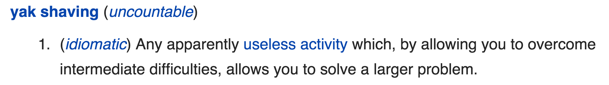
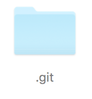

Yak Shaving
Yak shaving
In programming:
Version Control
Build Tools
Dependency Management
Version Control
(git)Why should I care?
a parable
BAD.
Why bad?
- Easy to lose work
- Can't track changes
- Hard to transfer files around.
The solution?
Git!
(or another vcs)
How does it work?
(artist's impression)
Install Git
git-scm.com/downloadsgit lg
battlecode.org/gitPrivate git repositories
How do I learn more git?
git-scm.com/bookWhat about that other stuff?
I didn't have time to finish the presentation, I'll just monologue :)